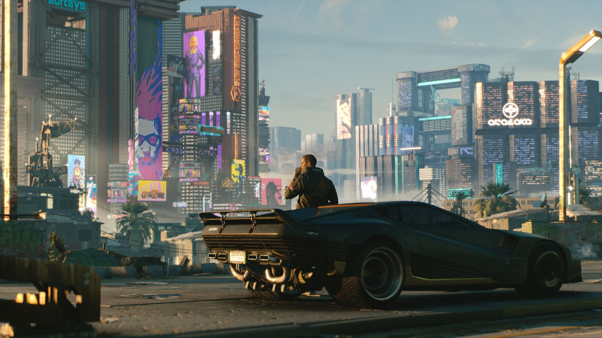

Cyberpunk 2077: O Futuro Chegou?
Publicado em: 07/10/2025
Nota Final:
9 / 10
O que gostamos em Night City?
Cyberpunk 2077 nos leva a uma metrópole futurista e decadente. A história é rica e profunda, com V (o protagonista) em busca de um implante que promete a imortalidade. As escolhas do jogador realmente impactam o mundo e o desfecho da trama. O jogo foi muito elogiado após a atualização 2.0 e a expansão Phantom Liberty, que o transformaram em um dos RPGs mais completos, com uma experiência narrativa mais profunda e um mundo que cativa os jogadores.
✅ Prós
- Narrativa e Personagens memoráveis.
- Direção de arte e gráficos impressionantes.
- Grande liberdade de customização e construção de personagem.
❌ Contras
- Requer um hardware potente para rodar no máximo.
- Mundo aberto, apesar de lindo, ainda parece um pouco "vazio" em alguns aspectos.